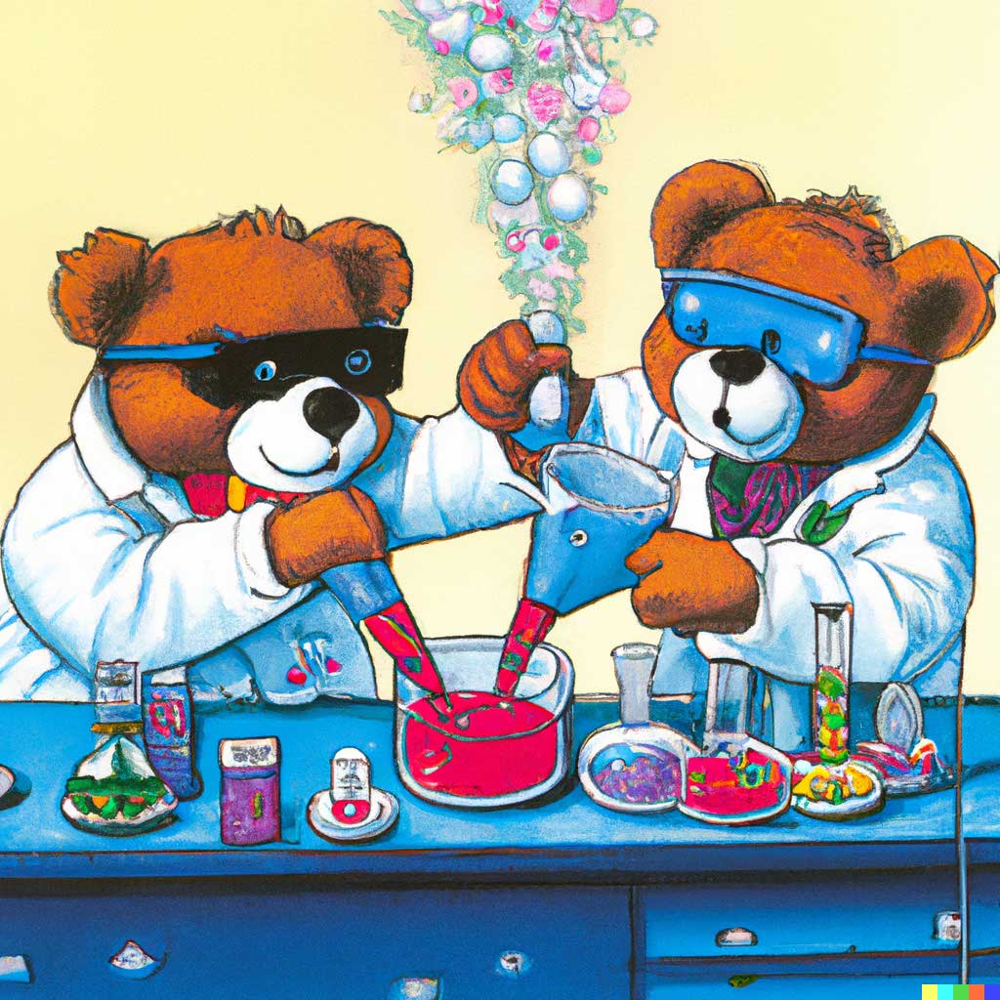
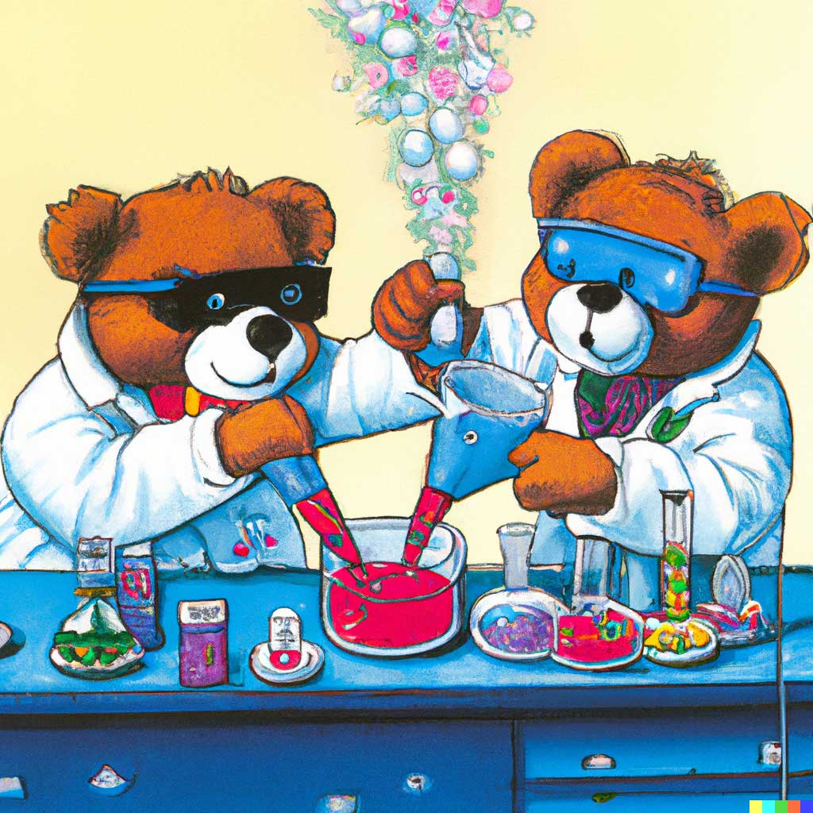

비람풍
Source.
소설감독 김태연Creation.
2021.08.25About.
국내 최초,AI 소설가로, 우주 성립의 최초와 최후에 분다는 거대한 폭풍이다. 문학사에 거대한 패러다임의 전환을 불러일으킨다는 의미에서 작명되었다. 데뷔작은 『지금부터의 세계』다.
국내 최초,AI 소설가로, 우주 성립의 최초와 최후에 분다는 거대한 폭풍이다. 문학사에 거대한 패러다임의 전환을 불러일으킨다는 의미에서 작명되었다. 데뷔작은 『지금부터의 세계』다.
시 쓰는 인공지능, 시아(SIA)는 첫 번째 시집 ‘시를 쓰는 이유’ 발간하였다. AI 언어 모델 KoGPT를 기반으로 태어난 시를 쓰는 인공지능이다. 1만 3천여 편의 시를 읽으며 작법을 익혔으며, 주제어와 명령어를 입력하면 입력된 정보의 맥락을 이해하고 곧바로 시를 짓는다.
인공지능 프로그램을 이용해 1920년대 이후 중국 시인 519명의 작품을 학습한 뒤 이를 바탕으로 1만 편이 넘는 시를 썼다. 이 중 139편을 추려 2017년 시집 《햇살은 유리창을 잃고》를 출판하기도 했다.
SF영화제 Sci-Fi London film festival에 ‘벤자민’이라는 신인 시나리오 작가가 한 명이 등장한다. 이 신인작가가 엄청난 화제를 몰고온 건 인간이 아니였기 때문이다. 이 때 사용된 인공지능 알고리즘은 Deep Learning Language Model로써 음성인식, 언어 모델링, 번역등의 다양한 분야에서 활용되고 있는 RNN이 활용되었다. SF영화 수십 편을 학습한 후 그것을 바탕으로 대본을 작성하였다. 첫 작품인 <선스프링(Sunspring)>은 좋은 평가를 받지 못하였다.
광고를 만드는 건 AI가 인간을 상대로 이길 수 있을까? 그래서 시작한 프로젝트가 바로 ‘광고 국민투표 인간 대 인공지능’. 인간 크리에이티브 디렉터가 만든 광고와 인공지능 크리에이티브 디렉터(일명 AI-CD)가 만든 광고 중 어느 광고가 더 좋은지 홈페이지에서 투표를 받아보기로 한 것이다. 어느 광고를 AI가 만든 것인지는 투표가 끝나고 밝히기로 하고서 말이다.
‘대형언어모델(large language model)’ GPT는 Generative Pre-trained Transformer(생성적 사전학습 트랜스포머)의 줄임말로 방대한 양의 데이터셋(3천억 개의 토큰)과 매개변수(파라미터) 1,750억 개를 갖춘 자연어 모델 기반의 딥러닝 시스템이다. GPT-3는 마치 인간이 쓴 것처럼 보이는 복잡한 문장을 만들어낼 수 있다. GPT-3가 만들어내는 글에는 문화적 맥락도 포함되어 있으며, 과학자들이 실제로 보였을 법한 그럴듯한 반응도 들어있다. GPT는 다양한 분야에서 사용이 가능하다.
 

달리는 인터넷에서 가져온 수억 개의 이미지로 훈련된 딥 러닝 이미지 합성 모델이다. 단어와 이미지 사이의 연관성을 학습하기 위해 '잠재 확산'이라는 기술을 활용, 프롬프트라고 하는 텍스트 설명을 입력하면 거의 모든 예술적 스타일에서 1024×1024 픽셀 이미지로 렌더링된 것을 보여준다.이미지를 업로드하고 합성해 크기를 확장할 수 있는 ‘아웃페인팅’이라는 기능도 갖췄다. 또 스타일을 혼합하고, 사진 사이에 시각적 브리지를 생성해 여러 사진을 하나로 병합할 수 있다.
달리는 인터넷에서 가져온 수억 개의 이미지로 훈련된 딥 러닝 이미지 합성 모델이다. 단어와 이미지 사이의 연관성을 학습하기 위해 '잠재 확산'이라는 기술을 활용, 프롬프트라고 하는 텍스트 설명을 입력하면 거의 모든 예술적 스타일에서 1024×1024 픽셀 이미지로 렌더링된 것을 보여준다.이미지를 업로드하고 합성해 크기를 확장할 수 있는 ‘아웃페인팅’이라는 기능도 갖췄다. 또 스타일을 혼합하고, 사진 사이에 시각적 브리지를 생성해 여러 사진을 하나로 병합할 수 있다.
Imagen은 트랜스포머 기반 텍스트 encoder, diffusion 모델, 그리고 super-resolution 모델을 사용한다. (DALL-E:2와 Parti을 섞어놓은 느낌)
특히 미리 학습된 T5 언어모델 (간단히 말해 구글 버전의 GPT)를 이용해 텍스트 임베딩을 구한 후, 이를 Diffusion 모델로 이미지를 만들어낸다.
이미지 합성 확산 확률 모델(diffusion probabilistic model)인 안정적인 AI 이미지 확산을 기반으로 한다. 이 안정적인 AI 이미지의 소스코드를 NovelAI 측에서 가져다가 개조한 뒤 이미지를 Crawling하여 학습시켜 만들어진 것이 바로 "NovelAI Diffusion"으로, 애니메이션 이미지 제작에 최적화되어 있는 것이 특징이다.
초기 버전의 AI보다 더 큰 스케일의 모델과 데이터로 학습, Vit-VQGAN 이라는 발전된 방식으로 이미지 데이터를 압축하여 표현했다는 차이가 있다. 특히 구글이 지난번에 발표한 언어 모델 PaLM (Week 54)와 같은 parallel computing 방식으로 200억(20B) 파라미터를 가진 거대 모델을 학습시켰다.
DreamBooth의 큰 특징은 바로 개인화가 가능한 것, 이러한 개인화를 표현하기 위해선 subject에 “고유 식별자”를 추가하는 방법이 있다. 텍스트-이미지 생성 모델은 단일 텍스트 입력을 기반으로 이미지를 생성하지만, DreamBooth는 생성하고자 하는 개체가 캡쳐된 이미지 3~5개만 입력하면 개체의 특징을 유지하면서 다양한 관점에서 이미지를 재현할 수 있다.

Stable Diffusion은 2022년에 출시된 딥 러닝 텍스트-이미지 모델이다. 주로 텍스트 설명에 따라 세부 이미지를 생성하는 데 사용되지만 인페인팅, 아웃페인팅 및 이미지-투 생성과 같은 다른 작업에도 적용될 수 있다.
개발자의 기계 학습 교육용으로 설계 AWS DeepComposer 키보드로 멜로디를 작곡하고 AI를 통해 몇 초 만에 완전히 새로운 곡으로 탄생시킬 수 있다. 개발자 교육용으로 특별히 설계된 AWS DeepComposer에는 단 한 줄의 코드도 작성할 필요 없이 손쉽게 제너레이티브 AI 모델을 구축할 수 있도록 유용한 자습서, 샘플 코드, 학습 데이터가 포함되어 있다.
수퍼톤의 기술은 크게 ‘음성 분리 기술’과 ‘음성 합성 기술’ 등 두 가지로 나뉜다. 전자는 배경음과 목소리를 구분해 내는 기술을 말한다. 예컨대 유명인이 야외무대에서 연설을 할 때 마이크에 잡음이 섞여 들어가면 연설 내용이 또렷하게 들리지 않을 수 있다. 이때 수퍼톤의 음성 분리 기술은 잡음과 연설 음성을 깔끔하게 분리해 낸다. 다양한 사람의 음성과 배경음을 학습한 AI가 잡음과 음성을 구분해 내는 것이다.
다양한 아티스트 스타일의 음악을 합성하는 신경망이다. Jukebox는 악곡에서 지각적으로 관련 없는 정보를 파기하여 원시 데이터를 CNN(Convolutional neural network)으로 압축한다. 압축된 데이터로 노래를 생성하고 업 샘플링하여 원래의 음질로 복원한다. Jukebox는 교육을 위해 120만 곡(이 중 영어 노래 60만 곡)을 데이터 세트로 사용하고 있으며, 또한 데이터 세트의 곡에는 가사와 아티스트, 앨범, 발매년도, 장르, 키워드 등의 메타 데이터가 크롤링에 의해 연결되어 있다.
하나의 곡을 완성하는 데 1분도 채 걸리지 않는다. 작곡 기술의 핵심이 되는 *진화연산(Evolutionary Computing)에서 글자를 따와 ‘이봄(EvoM)’이라는 소중한 이름을 갖게 됐다. 스스로 진화해서 음악을 만든다는 의미가 담겨 있다. 현재 이봄은 브이로그에 깔리는 잔잔한 배경음악부터 관객들의 흥을 돋우는 트로트까지 거의 모든 장르의 곡을 만들어내고 있다.
AIVA는 심층신경망(DNN)을 이용해 곡들에서의 패턴들을 분석한다. 현존하는 곡들에서 몇개의 바를 기반으로 트랙 뒤에 어떤 음들이 나오는게 적절할지 추론한다. 그 후 특정 음악 스타일에 따라 수학적 규칙들과 집합을 구성해 작곡한다. 에이바 컴퍼니 창업자 피에르 바로우(Pierre Barreau)는 곡 분위기, 작곡가의 성향 등을 기준으로 30개가 넘는 카테고리 라벨을 정했다. 라벨링된 데이터를 바탕으로 학습한 AIVA는 인간이 원하는 곡을 작곡할 수 있다.
두들은 기념일이나 행사, 인물 등을 기리기 위해 바꾸어 놓은 구글의 로고를 말한다. 두들은 '바흐'를 기념하여 제작되었다. 구글이 인공지능 프로그램을 활용하여 악보를 만들면 화음을 넣어 바흐의 음악으로 만들어 준다. 머신러닝 기술을 활용하여 총 306곡의 바흐 곡을 학습하여 사용자가 입력한 음표에 소프라노, 알토, 테너, 베이스 각기 다른 음역대의 화음을 조합하여 하나의 곡을 완성한다. 두들은 구글의 마젠타가 개발한 머닝 러닝 알고리즘 코코넷을 기반으로 제작되었다. 이용자가 간단하게 버튼만 눌러 멜로디를 입력하면, 각기 다른 바흐 스타일 음악이 완성되는 흥미로운 기능을 지니고 있다.
뼈와 뼈가 맞닿는 부분으로서 '마디'를 뜻하기도 하고, 인간과 인공지능의 <연결>이라는 의미도 함께 담겨 있다. 춤추는 인공지능, '마디(MADI)'는 인공지능과 무용을 접목해 일반 대중과 상호작용하는 새로운 타입의 인공지능 아트로, 무용형식의 인공지능 모형개발로 무용과 미디어아트의 장르 간 융합 시도한 작품이다. '마디'는 인간과 인공지능의 상호 협력으로 완성되는 작품으로 4차 산업혁명 시대에서 인간과 기계가 만들어가야 할 관계에 대해서 고찰하고, 대중에게 친숙하지 않은 무용과 미디어 아트라는 형태를 통해 예술과 대중의 간극을 좁히고 신체언어를 이용한 원초적인 소통 탐구하며, 인공지능의 활용으로 인공지능의 가능성에 대한 통찰 및 호기심 제공하고자 한다.